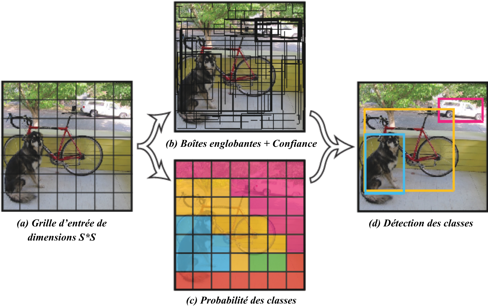
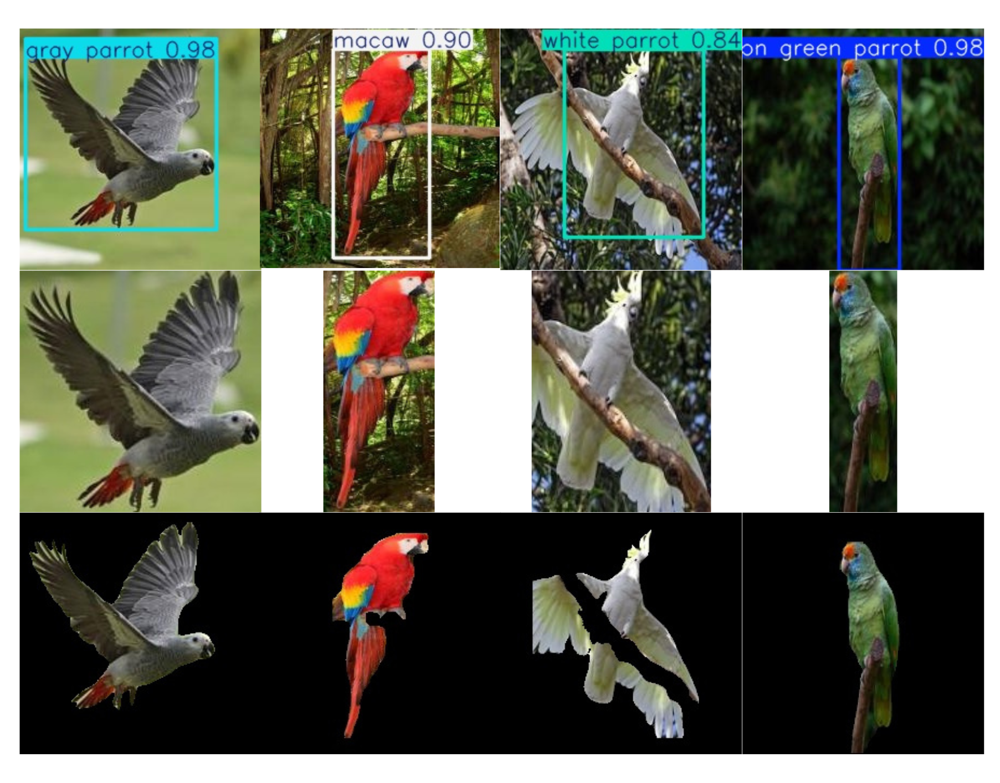
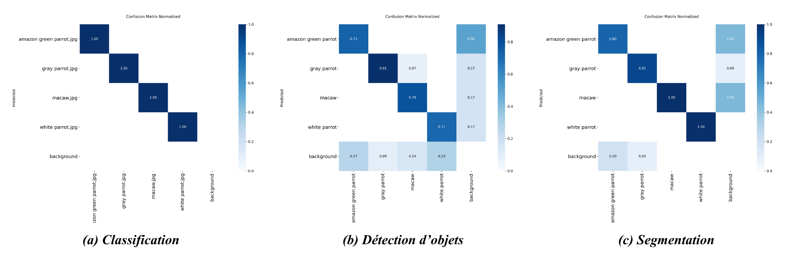

Stage à l’IRIT : vision par ordinateur
Six semaines à l’Institut de Recherche en Informatique de Toulouse, en mai-juin 2026, sur la détection d’objets dans des images.
J’ai mené un projet de recherche personnel en suivant la démarche d’un chercheur : poser une question, lire ce qui existe, tester, puis analyser ce qui fonctionne et ce qui échoue.
J’ai utilisé Python et YOLO, une famille de modèles qui repère plusieurs objets dans une image en une seule passe. J’ai comparé trois approches (classification, détection d’objets et segmentation) sur des images de perroquets, et regardé leurs erreurs avec des matrices de confusion.
- Lieu IRIT, Toulouse
- Durée 6 semaines
- Outils Python, YOLO
- Domaine Vision par ordinateur



CV
Mon CV en deux langues. Choisissez la version.


Parcours
Formation, stages et engagements, du plus récent au plus ancien.
- Sept. 2026 – aujourd’hui
Cycle ingénieur, 1ère année · parcours Sciences du Numériques
Filière Sciences du Numérique à l’ENSEEIHT, Toulouse INP.
- Mai – juin 2026
Stage dans un laboratoire de recherche en informatique - IRIT
Six semaines de recherche en vision par ordinateur, avec Python et des modèles comme YOLO ou SAM.
- Oct. 2024 – oct. 2025
Vice-Président du BDE de la Prépa T²
Organisation d’évènements étudiants (soirées, weekends, intégration, ...).
- Sept. 2024 – juin 2026
Prépa Toulouse Transition
Mathématiques, physique, chimie, algorithmique et programmation Python.
- 2024
Baccalauréat général, mention très bien
Spécialités mathématiques et physique-chimie.